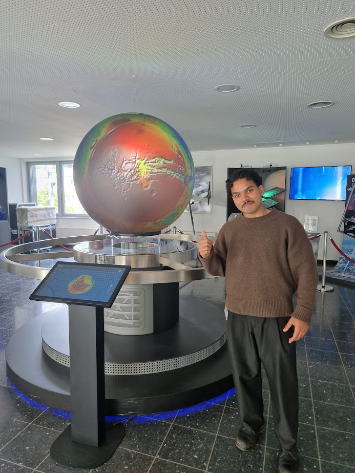
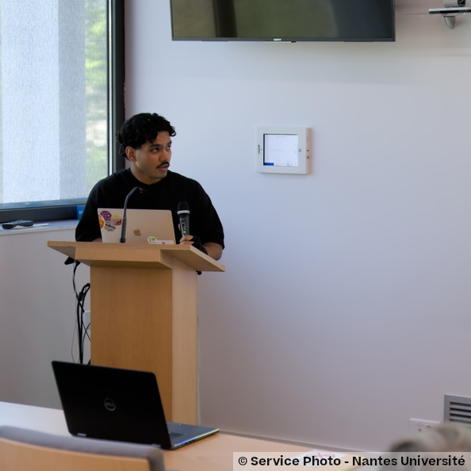
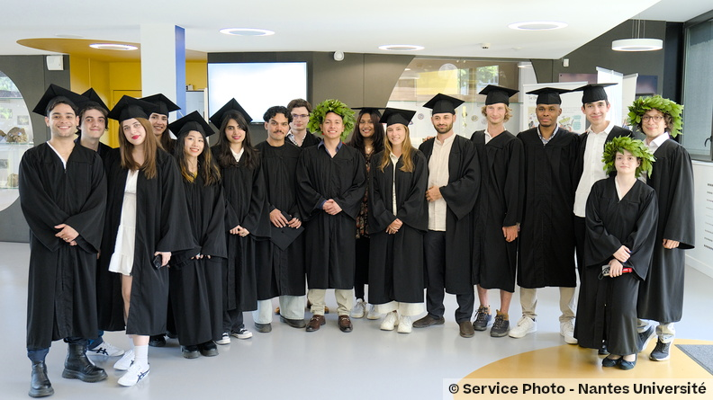
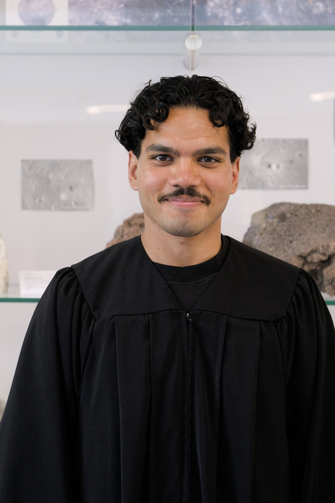
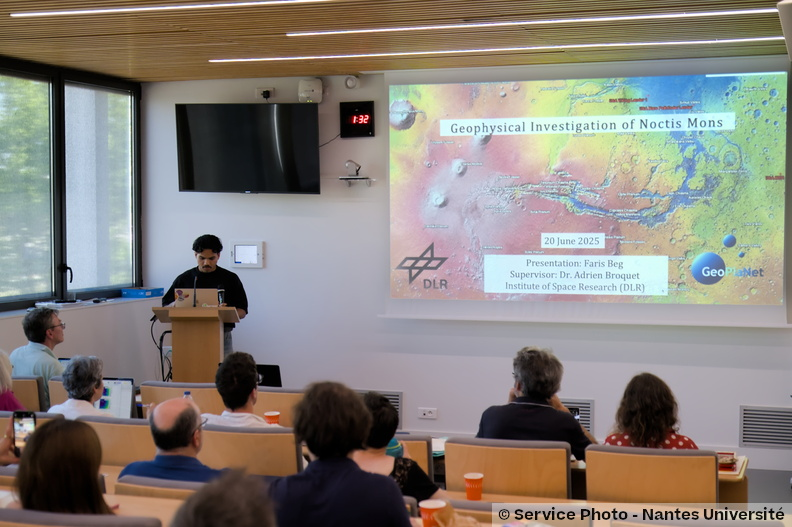
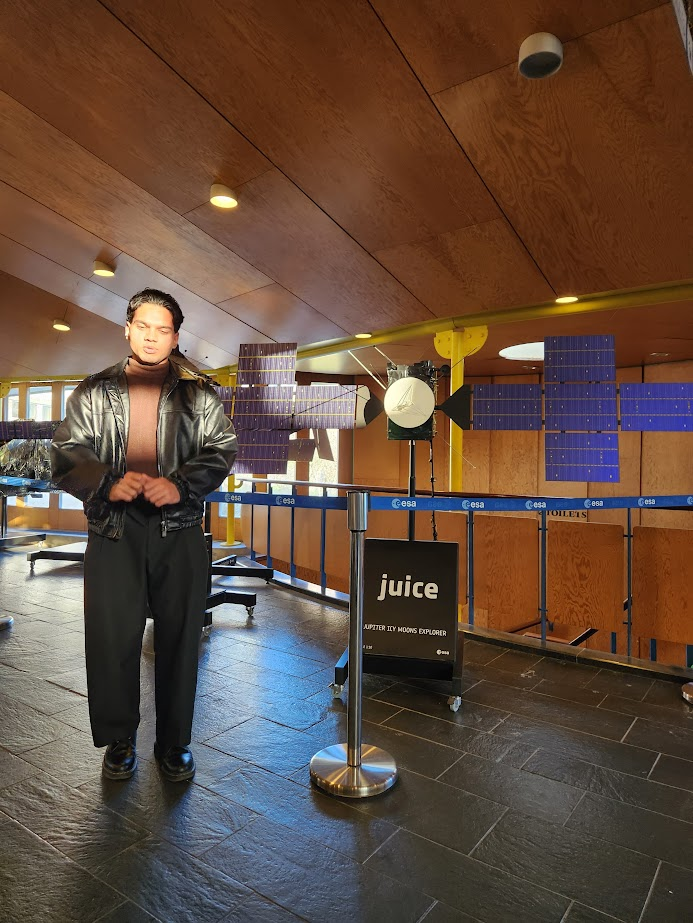

Strong foundation in data analytics, research, and communication with a background in planetary data science & geophysics. Hands-on experience applying numerical modelling and advanced analytics to complex, real-world datasets. Skilled in researching, processing, and presenting technical information coherently to stakeholders.
With a deep analytical skillset from planetary data science, I am eager to help build data-driven solutions for strategic challenges faced by business and consultancy firms.
I am a recent STEM graduate with a strong interest in data-driven business solutions. My technical foundation was fostered in planetary geophysics/geodynamics which gave me a strong foundation to drill out signals from noisy data and present coherent stories to non-technical stakeholders.
With the Erasmus Mundus Joint Master's, spanning four countries and four institutions over two years, I cultivated not only technical expertise but the adaptability and cross-cultural fluency much adamant in a consulting and client-facing environment.
I am actively seeking entry-level roles in data analytics, business consultancy, as well as geo-data sceince. Open to relocation and remote.
Selected as a fully-funded Erasmus Mundus scholar under the GeoPlaNet joint master's programme — one of the EU's most prestigious postgraduate scholarships, awarded to a highly competitive international cohort. Over two years, I completed four consecutive academic semesters across four European countries, each embedded at a leading university or research institution.
End-to-end analytics from raw data ingestion and cleaning through to visualisation and interpretation. Python (pandas, NumPy, sqlite3 Matplotlib), SQLite, PowerBI (DAX, power query, data modelling), and Excel with Pivot tables.
Star schema modelling, fact and dimension table normalisation, complex queries using CTEs, subqueries, and window functions (LAG, RANK, DENSE_RANK).
2+ years of training across 5+ university projects processing and analysing orbital datasets. Built 3 Python pipelines for satellite data; integrated interpolated (RBF) datasets into numerical simulation models of increasing complexity, deriving 5 geophysically relevant parameters through grid operations and RMS misfit analysis.
Lead author on two scientific publications. Experienced in translating complex technical findings into clear narrative for non-technical audiences and stakeholders.
Led winning team at AAPG National Conference (2020); group leader in a 7-day Hyalite lab study; captain of inter-college debating team. Thrives across diverse group dynamics and cooperation cultures, strengthened by four consecutive international academic mobilities.
Advanced geospatial workflows using QGIS, ArcGIS, GDAL, and rasterio. Remote sensing, DEM morphometrics, multispectral and SAR data, and NDVI analysis.
Analysed 51,290 transactions across 13 regions using SQLite within Python, identifying 7% of high-revenue products causing loss. Designed a star schema database uncovering an overall profit margin of 18.75%. Advanced SQL including CTEs, window functions, and CASE WHEN segmentation.
View on GitHub →First ever geophysical study of Noctis Mons on Mars. Built Python pipelines to reconstruct volcanic height and edifice volume from orbital datasets. Developed a 5D numerical plume model and inverted MARSIS radar data for subsurface characterisation. Published in DLR repository and ESSOAr.
View on GitHub →Collaborated in a 7-day field excursion to Ebro Basin, Zaragoza, for a project on ancient inverted river channels analogous to Mars. Conducted as a group of four. Results published as a scientific article on the EGU Tectonics and Structural Geology blog.
View publication →First geophysical and geodynamic study of Noctis Mons on equatorial Mars, using MOLA, MARSIS, and numerical plume modelling. Determining 5 previously unknown parameters. Published in the DLR institutional e-Library and ESSOAr open archive.
Study of ancient inverted river channels in the Ebro Basin, Spain, with analogous implications for Martian surface geology. Published on the EGU Tectonics and Structural Geology blog.
2023 — 2025 · Fully funded EU postgraduate research scholarship. Highly competitive international selection.
2023 · Competitive merit-based scholarship awarded alongside the Erasmus Mundus funding.
2020 · Led the winning team at the national geoscience competition.
Published in DLR e-Library, ESSOAr open archive, and EGU Tectonics and Structural Geology.
Led high-school debating team at inter-college competition level.
Led a 4-person, 7-day study on Opal rocks in Caux as part of the Erasmus Mundus programme.

Add photo
Add photo
Add photo
Add photo
Add photo
Add photoOpen to data analytics, data consultancy, climate data, and research analyst roles. Based in Berlin. Open to relocation or remote.